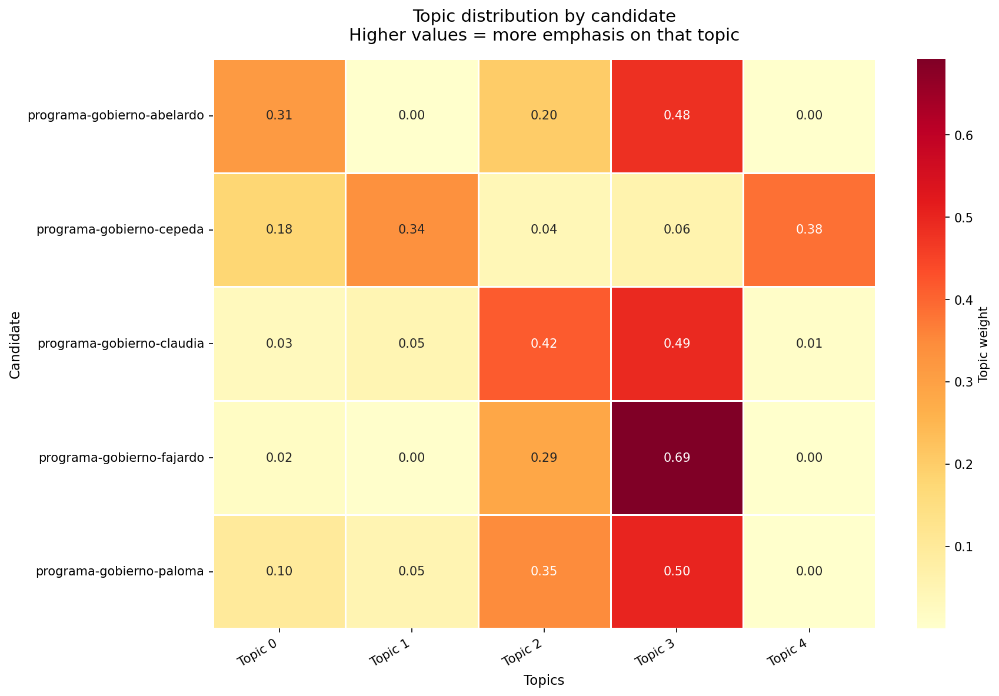
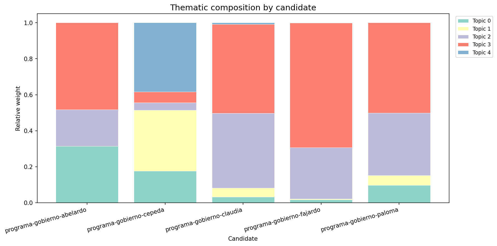
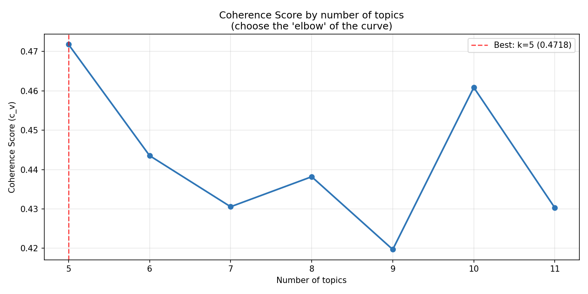

LDA topic analysis applied to the presidential candidates' government plans.
words_per_topic.csv,
read the top words for each topic, and assign descriptive labels in the
TOPIC_LABELS dict in the script. Re-run to get the final report
with meaningful labels.
Each value represents how much weight that topic has in the candidate's plan. Higher value = more emphasis on that theme.
| Topic 0 | Topic 1 | Topic 2 | Topic 3 | Topic 4 | |
|---|---|---|---|---|---|
| Candidate | |||||
| programa-gobierno-abelardo | 0.314 | 0.000 | 0.202 | 0.483 | 0.000 |
| programa-gobierno-cepeda | 0.177 | 0.338 | 0.041 | 0.060 | 0.384 |
| programa-gobierno-claudia | 0.032 | 0.049 | 0.415 | 0.494 | 0.009 |
| programa-gobierno-fajardo | 0.017 | 0.005 | 0.285 | 0.692 | 0.001 |
| programa-gobierno-paloma | 0.098 | 0.053 | 0.347 | 0.502 | 0.000 |


Chart for choosing the optimal number of topics. The "elbow" of the curve indicates the best balance between interpretability and detail.

Use these words to manually label each topic in the script
(TOPIC_LABELS).
| topic_id | suggested_label | top20_words |
|---|---|---|
| 0 | Topic 0 | política, país, social, corrupción, violencia, víctimas, extrema, derecha, poder, sociedad, fuerza, verdad, jóvenes, histórico, derechos, sociales, proyecto, electoral, cambio, años |
| 1 | Topic 1 | país, social, agraria, revolución, agua, vamos, pobreza, política, necesitamos, economía, territorios, corrupción, cambio, tierra, campesinos, comunidades, sociales, tenemos, compañeros, seguir |
| 2 | Topic 2 | desarrollo, inversión, país, proyectos, infraestructura, comunidades, territorios, agua, indígenas, territorio, territorial, ambiental, región, acceso, empresas, productiva, sostenible, será, energética, seguridad |
| 3 | Topic 3 | salud, educación, social, política, seguridad, país, corrupción, mujeres, cuidado, protección, personas, justicia, pública, integral, desarrollo, empleo, atención, formación, oportunidades, servicios |
| 4 | Topic 4 | política, social, sociales, país, derechos, historia, pueblos, víctimas, violencia, mujeres, sociedad, compañeras, poder, compañeros, revolución, justicia, dignidad, cambio, luchas, histórico |